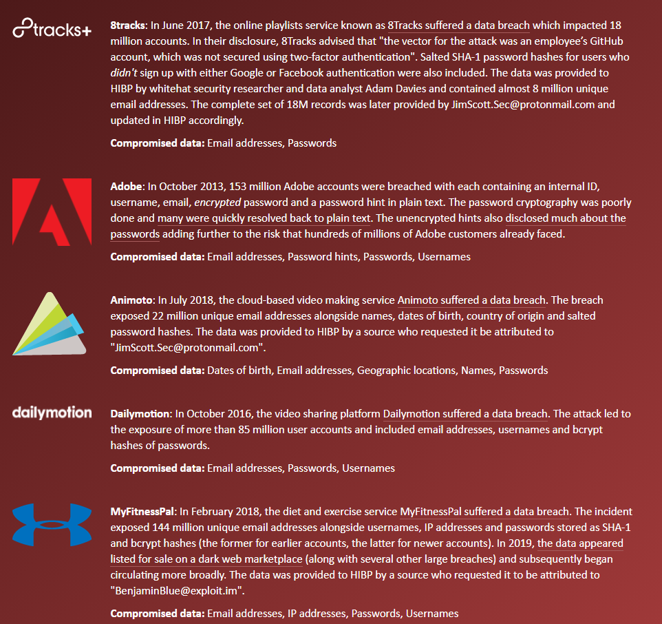

Password Management
In today’s digital age, having a strong password locking your various online accounts is a crucial part of defending yourself on the internet. Although, I know I’m not alone in saying that the hoops some websites force you to jump through so that their software deems your chosen password “strong” is a great annoyance. You struggled through it regardless and now you have a jumbled mess of letters, numbers, and special characters that you have no chance of remembering. You’ve done all of this and your account still ends up getting hacked or lost in a data breach, so now what? Hopefully, I can help.
My Experience & Advice
One thing I personally have fallen victim to over the years is using the same trusty old password for every account so that I couldn’t possibly forget it. But sure enough, one of the accounts I made years ago fell victim to a data breach, and in turn whoever had taken this data now had access to all of my accounts, including the ones with my credit card and banking information. It was terrifying. So one easy-to-remember piece of advice I can give you is to never reuse a password, regardless of your connection to it. I know, it may seem easy, but this is a fail-safe so that even if one of your accounts gets hacked at least the rest of them are safe.
A Powerful Tool
A great tool to find out if your accounts have succumbed to a data breach is the website Have I been Pwned. This website allows you to check your email address against known data breaches to see if your accounts are at risk. It actually helped me realize many accounts I had made in the past were putting other accounts at risk. 
Yeah, it wasn't great.
Password Keepers
Another thing is, you’ve done everything you could to create a strong password and now you managed to forget it. What should you do? I’m all for writing them down on a spare piece of paper, but I could see how that would be off-putting given you could lose it or throw it out accidentally. I would recommend a password manager. A password manager is a program that will hold all of your passwords and usernames in a secure location, and guard them with one master password. According to my research, the best password managers I can recommend are LastPass, Keeper, and BitWarden. They all vary in price and features, but with one common goal to keep your passwords secure so you don’t have to worry about forgetting or losing them, given you remember the master password.
To Conclude
All in all, I hope after reading this you now know how to deter hackers from getting into your accounts. By never reusing a common password, using a password manager, and frequently checking the tool I provided for data breaches, you should feel some sense of security when creating an account. Thanks for reading!